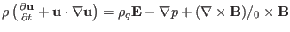
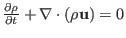

The time evolution of the fluid velocity
 is governed by the
momentum equation
is governed by the
momentum equation
where  ,
,  ,
,  ,
,
 ,
, and
,
, and
 are
mass density, charge density, thermal pressure, current density, electric
field, and magnetic field, respectively. The time evolution of the mass
density is governed by the mass continuity equation
are
mass density, charge density, thermal pressure, current density, electric
field, and magnetic field, respectively. The time evolution of the mass
density is governed by the mass continuity equation
The time evolution equation for pressure is given by the equation of state
 |
(3) |
where is the ratio of specific heats. The time evolution of
is given by Faraday's law
The current density
can be considered as a derived quantity,
which is defined through Ampere's law (the displacement current being ignored)
The electric field
is considered to be a derived quantity, which
is defined through Ohm's law
 |
(6) |
The charge density can be considered to be a derived quantity, which
is defined through Poisson's equation,
The above equations constitute a closed set of equations for the time
evolution of four quantities, namely,
,
, , and
(the electric field
, current density
, and
charge density are eliminated by using Eqs. (5),
(6), and (6)). In addition, there is an equation
governing the spatial structure of the magnetic field, namely
In summary, the MHD equations can be categorized into three groups of
equations, namely[1],
- Evolution equations for base quantities
,
,
, and :

,
,
- Equation of constraint:
.
- Definitions: (i.e., they are considered to be derived quantities.)
,
,
.
The electrical field term
in the momentum equation
(1) is usually neglected because this term is usually much
smaller than other terms for low-frequency phenomena in tokamak plasmas.
Subsections
yj
2015-09-04